Sürüşün Esnasında Karşılaşabileceğin İkaz Lambaları
TikTak kiralaman esnasında araçta bazı uyarılarla karşılaşabilirsin. Hangi ikaz lambasının ne anlama geldiğini ve bununla ilgili ne aksiyon alman gerektiğini aşağıda görebilirsin.
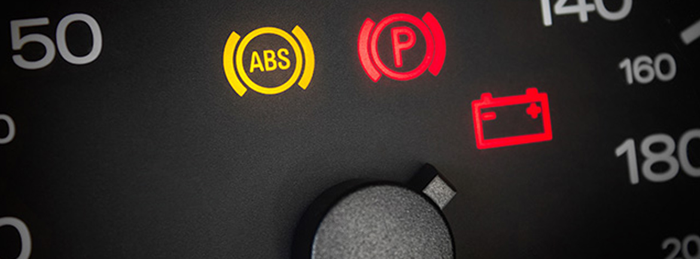
Aşağıdaki ikaz ışıklarını aldığınızda güvenliğiniz için en kısa sürede uygun bir alana arabayı park edip kiralamayı sonlandırmanız gerekmektedir. Kiralamanız sonrasında Kirala Müşteri Hizmetlerini arayarak durumu bildirmenizi rica ederiz
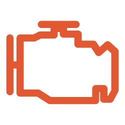
Motor arızalı olduğunda bu uyarı alınır.
Otomatik viteste sorun olduğunda bu uyarı alınır.
Fren sisteminde sorun olduğunda bu uyarı alınır.
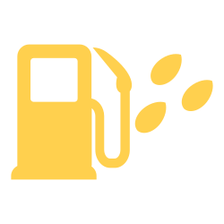
Yakıt filtresindeki su seviyesi arttığında bu uyarı alınır.
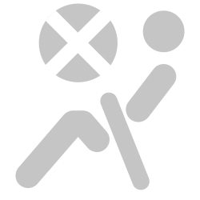
Airbag sistemi kapalı olduğunda bu uyarı alınır.
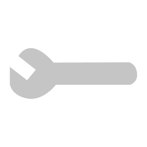
Mekanik bir sorun ya da elektrik sisteminde arıza olduğunda bu
uyarı alınır.
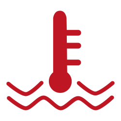
Motor soğutma sıvısı fazla ısındığında bu uyarı alınır.
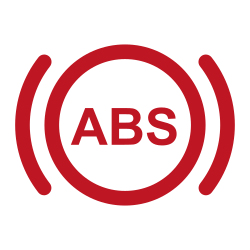
ABS ikaz lambasında tespit edilen hatadır.
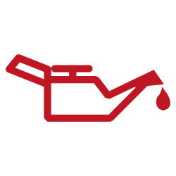
Yağ seviyesi azaldığında bu uyarı alınır.
Servis arızası olduğunda bu uyarı alınır.
Direksiyon kilidi arızası olduğunda bu uyarı alınır.
Elektrik kontrollü direksiyon sistemi arızası olduğunda bu
uyarı alınır.
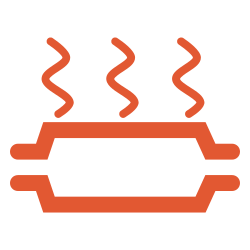
Katalizör sisteminde arıza olduğunda bu uyarı alınır.
Aşağıdaki ikaz ışıkları sürüşünüzde herhangi bir engel oluşturmamaktadır. Kiralamanız sonunda saha ekibimizin gerekli kontrolleri yaparak müdahalede bulunabilmesi için Kirala Müşteri Hizmetlerini arayarak durumu bildirmenizi rica ederiz.
Yağ seviyesi azaldığında bu uyarı alınır.
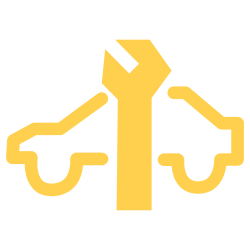
Servis arızası olduğunda bu uyarı alınır.
Direksiyon kilidi arızası olduğunda bu uyarı alınır.
Ön cam yıkama sıvısı az kaldığında ya da bittiğinde bu uyarı
alınır.
Fren balataları aşındığında bu uyarı alınır.
Yağış esnasında ışığın kırılma ve yansımasını hesaplayıp
kontrol ünitesine bildiren aydınlık ve yağmur sensörüdür. Arıza
durumunda otomatik bir şekilde aktif olmazsa arıza var demektir.
Arabanın start sisteminde arıza olduğunda bu uyarı alınır.
Aşağıdaki ikaz ışıklarını aldıysanız kullanıma engel bir durum bulunmamaktadır ama güvenliğiniz için en kısa sürede servise kontrol ettirebilmemiz için kiralamanız sonrasında Kirala Müşteri Hizmetlerini arayarak durumu bildirmenizi rica ederiz.
Dış fren ampulü arızalı olduğunda bu uyarı alınır.
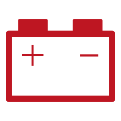
Akü boş ya da şarj sisteminde sorun olduğunda bu uyarı alınır.
Hava yastığı ve emniyet kemeri sistemi arıza olduğunda bu uyarı
alınır.
Yakıt filtresi kirli ya da arızalı olduğunda bu uyarı alınır.
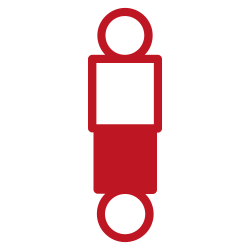
Süspansiyon sistemi arızalı olduğunda bu uyarı alınır.
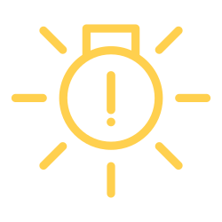
Park, fren, arka sis, sinyal, iç aydınlatma ve plaka lambaları
ile gündüz sürüş farlarından herhangi biri arızalı olduğunda bu
uyarı alınmaktadır.